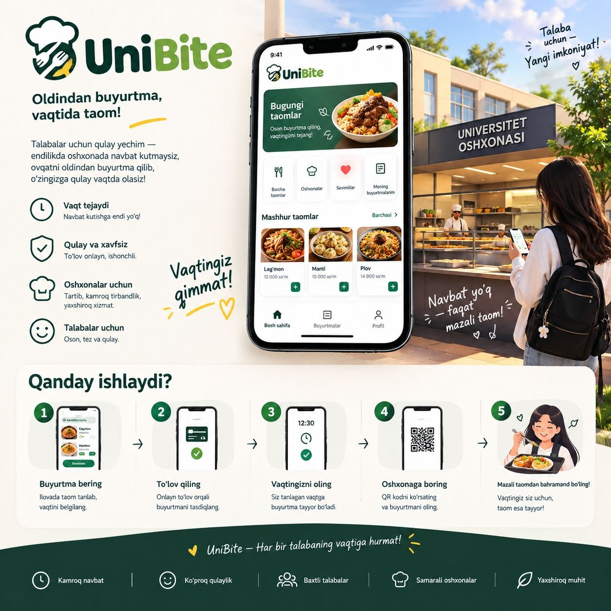
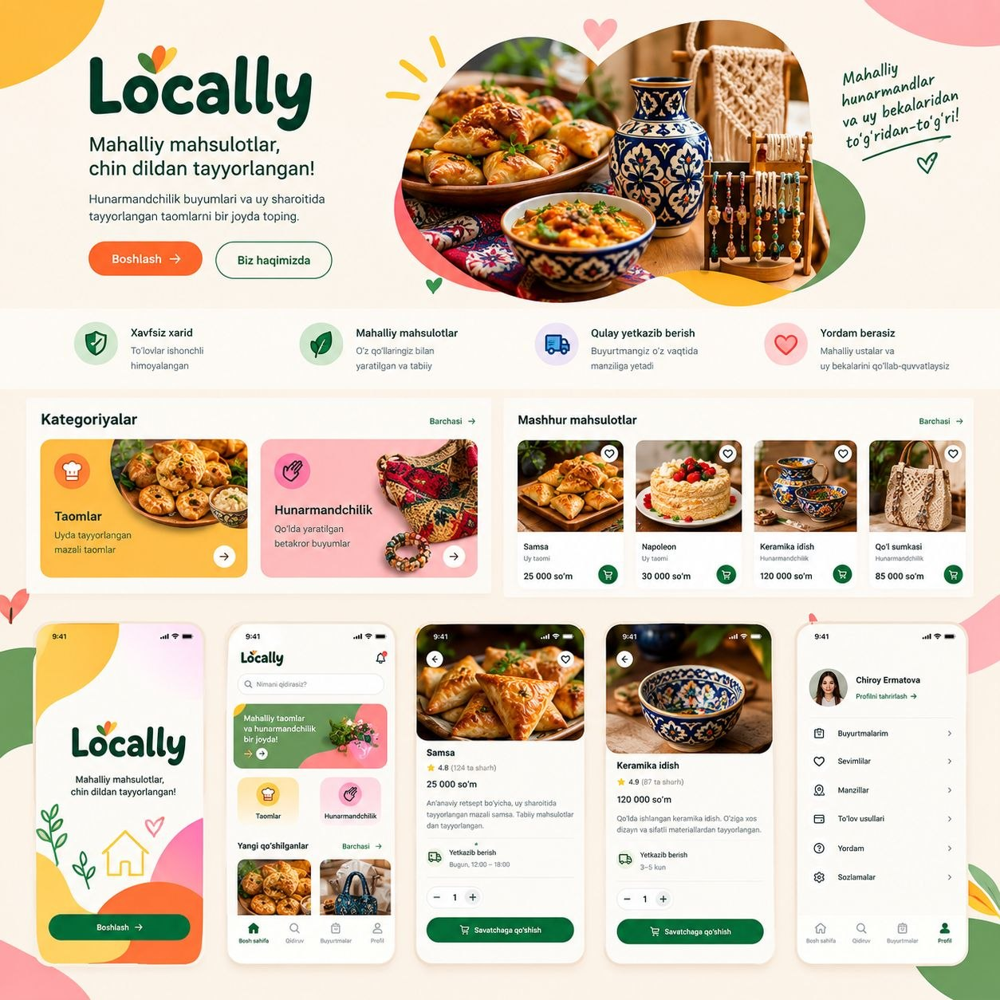
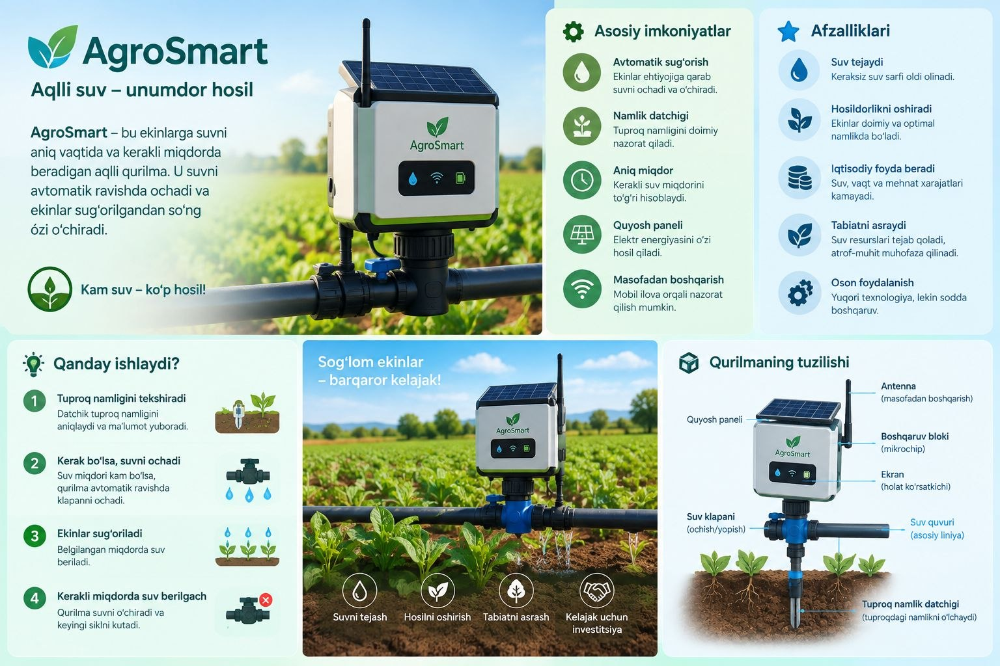
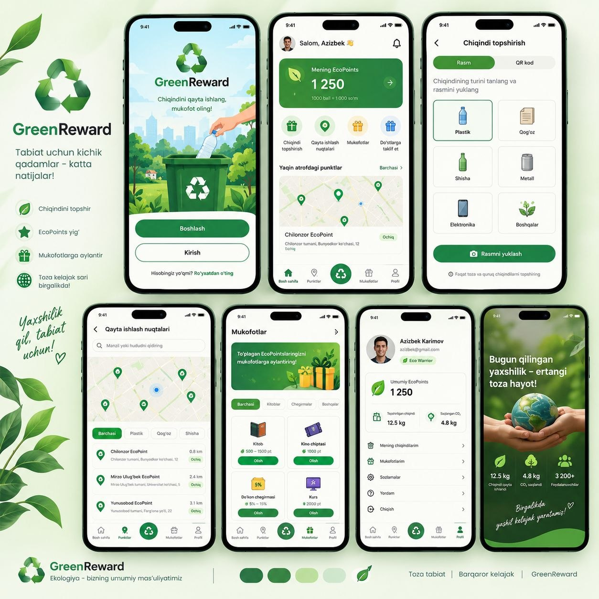

5 Ta G'oya Saralash Matritsasi
O'zbekistonning muhim sektorlari bo'yicha tahlil qilingan real muammolar va ularning startap salohiyati

01. FOODTECHUniBite
Talabalar oshxonasidagi 20-30 daqiqalik turnaqator navbatlar.

02. MARKETPLACELocally
Uy bekalari va milliy hunarmandlarning e-tijorat vitrinasi.

03. AGRITECHAgroSmart
Ekinlarda 40%+ suv isrofi va samarasiz qo'lda sug'orish.

04. ECOTECHGreenReward
Chiqindini saralash madaniyati va moddiy rag'bat tanqisligi.
.jpg)
Tracker OS
90%+ odamlarning 2 haftada maqsadidan voz kechishi.
Nega Aynan Tracker OS?
Cheksiz dasturiy masshtablanish, hardware xarajatlarining 0 ga tengligi va yuqori foydalanuvchi qaytishi (Retention) tufayli Tracker OS bosh loyiha sifatida tanlandi!
Tracker OS — Yagona Shared Core Ekotizimi
Habit Tracker (Odatlar Zanjiri)
Taymerlarsiz toza zanjir. Har bir odatni 1 bosishda qayd qilish, GitHub uslubidagi 30-kunlik intizom matritsasi.
Focus Tracker (Pomodoro)
Chuqur qora fondagi minimalist Pomodoro va 24 soatlik vaqt bloklari (10:00–12:00 dasturlash) orqali chalg'ishsiz diqqat.
Health Tracker (Salomatlik Triosi)
Kunlik qadamlar (8,420/10,000), suv balansi (2.4L/3.0L) va smartfon ekran vaqti nazorati (-28% kamayish).
Yagona Shared Core & 0ms Kesh
Yagona Google profili orqali markaziy sinxronlashuv va 100% offlayn ishlash imkoniyati.